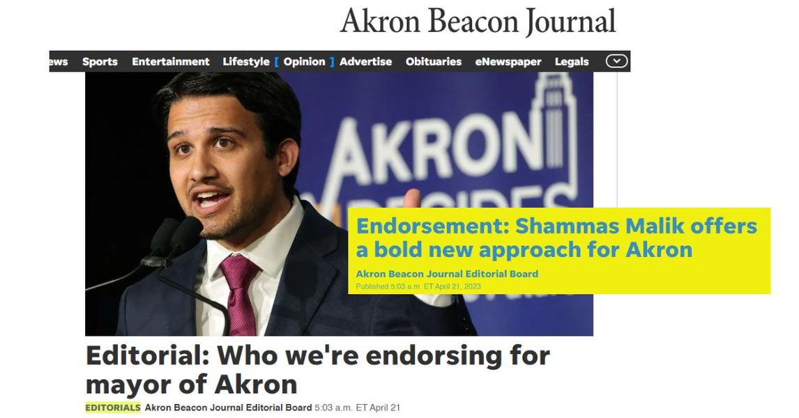

Timeline photos
I don't vote strategically. Like everything in my life, I work from the heart. From love and hope and faith.
If Tara Mosley is 100% committed to running for mayor on May 2 that is the oval I will fill in. I believe in Tara. I believe Tara is the kind of leader we need in this tumultuous time and emotional upheaval.
I am still bitter that my fellow Democrats voted for Hillary Clinton over Bernie Sanders because they thought she had a better chance of winning against Donald Trump. Look how well that turned out for you.
I vote for who I believe in, not who I think could win. There are too many variables to think you understand who is a better shot at a campaign.
I will vote for Tara Mosely.
That said, if Shammas and Tara were to come to a deal where she would be on his cabinet that would make me SO SO happy.
Shammas has a really solid plan of what he wants to accomplish. It focuses around safety and education. I think that's a good plan.
Shammas is weak emotionally. His head is strong. His heart is weak.
Tara's heart is beautiful and strong and true. She is the connection to the people. We need someone who really and truly understands the plight of Akronites. No one who is running for mayor understands this better than Tara.
A Shammas / Tara matchup would be like a local Bernie Sanders / Elizabeth Warren matchup. It's a superhero duo.
Most importantly, I really don't want Marco Sommerville to win. He is out of touch and will just keep doing exactly the same things we've been doing for the last 30 years. It's a plan that leads to more income inequality, more violence, more addiction, more homelessness. I'm not sure how much more of this strategy Akron can take.
I will follow Tara's lead.